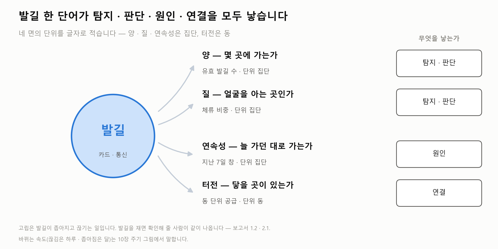
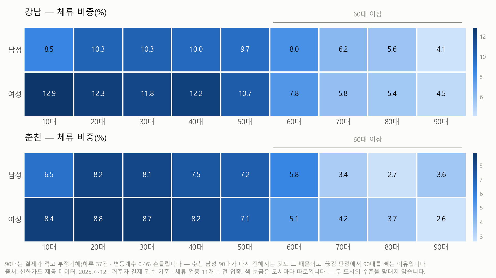
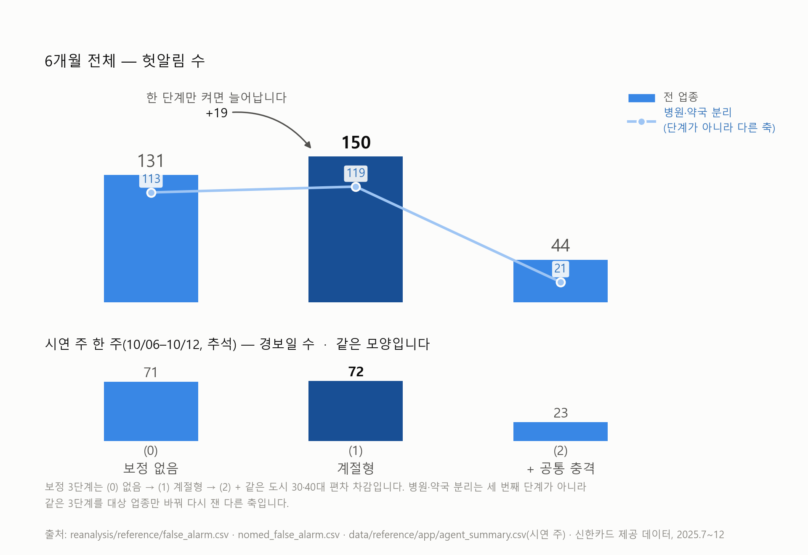
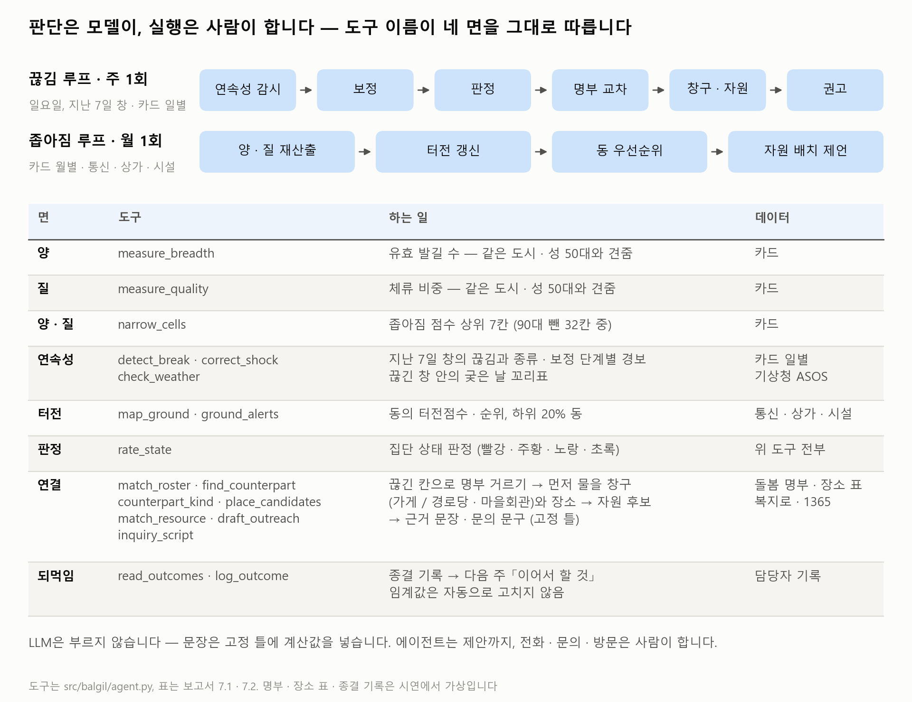
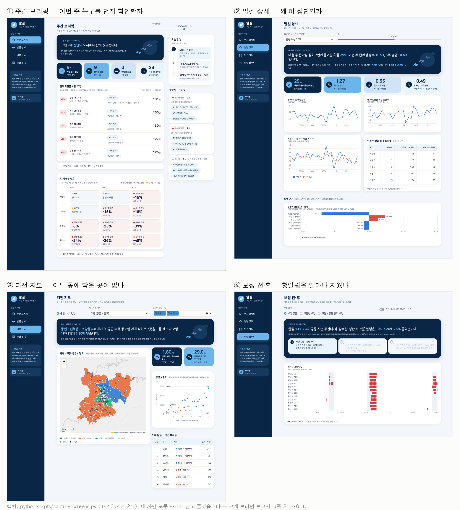

제14회 빅콘테스트 · AI데이터 활용 분야 · 팀 또커톤
사회적 고립 예방 및 대응을 위한 AI 에이전트 — 분석보고서
이 보고서는 발표자료의 설명을 보태는 기타자료이며, 발표자료와 같은 절 번호를 씁니다. 모든 수치는 docs/최종수치표.md 한 곳에서 가져왔습니다. 절마다의 상세 근거와 재현 명령은 재현 코드 zip의 상세판(reports/발길_분석보고서_상세판.html)에 있습니다.
주제 설명자료는 "기존의 사후 대응 중심 복지 체계만으로는 위기 징후를 조기에 발견하고 대응하는 데 한계"가 있다고 적고 있습니다. 이 한계는 두 군데에서 생깁니다.
고립은 마음의 상태라 직접 잴 수 없습니다. 그러나 고립된 사람은 밖으로 덜 나갑니다. 가는 곳이 줄고, 가더라도 사람을 마주치지 않는 곳으로 가며, 늘 가던 리듬이 끊깁니다. 이 보고서는 고립을 발길이 좁아지고 끊기는 일로 정의합니다.
이 정의에는 위험 점수에 없는 성질이 하나 있습니다. 발길을 재면 확인해 줄 사람도 함께 드러납니다. 발길이 어디로 향했는지 알면, 그 자리에서 그 사람을 알아볼 가게나 경로당도 알 수 있기 때문입니다.

| 하지 않은 것 | 이유 |
|---|---|
| 당사자 앱 | 고립을 진단받으려고 앱을 까는 사람은 드뭅니다. 발길은 이미 데이터에 남아 있어 묻지 않아도 잴 수 있습니다 |
| AI가 기관에 직접 연락 | 실현성과 윤리 문제가 따릅니다. 에이전트는 제안까지만 하고, 전화·방문은 사람이 합니다 |
| 행정동 단위 카드 지표 | 카드의 공간 단위가 시군구라 강남 22개 동의 카드 값이 모두 같습니다. 없는 해상도를 만들지 않습니다 |
| 90대 집단 | 춘천 90대는 결제가 하루 37건 · 32건으로 부정기해(변동계수 0.46 · 0.52) 평소 리듬을 정할 수 없습니다 |
고립을 한 숫자로 재면 원래 발길이 좁은 사람과 어제까지 다니다 멈춘 사람이 같은 값에 섞입니다. 둘은 필요한 대응이 다릅니다. 그래서 발길을 네 질문으로 나누고, 질문마다 답할 수 있는 데이터를 하나씩 정했습니다.
| 면 | 묻는 것 | 지표 | 데이터 | 단위 |
|---|---|---|---|---|
| 양 | 몇 곳에 닿는가 | 유효 발길 수 = 1 ÷ Σ(업종 비중²) | 카드 | 집단 |
| 질 | 얼굴을 아는 곳인가 | 체류 비중 = 체류 업종 11개 결제 ÷ 전 업종 결제 | 카드 | 집단 |
| 연속성 | 늘 가던 대로 가는가 | 지난 7일 결제가 평소 흔들림의 3배 넘게 줄었는가 | 카드 일별 | 집단 |
| 터전 | 닿을 곳이 있는가 | 통신 네 항목의 도시 안 순위 평균 | 통신(상가·시설은 나란히) | 동 |
네 면은 바뀌는 속도가 다릅니다. 끊김은 하루 단위, 좁아짐은 달 단위입니다. 에이전트의 주기를 주간(끊김)과 월간(좁아짐·터전) 둘로 나눈 이유가 여기에 있습니다.
제공 데이터는 신한카드 결제 2종(시간대별 · 고객 거주지별)과 SK 통신 유동인구 3종(성·연령 · 시간대 · 요일)입니다. 기간은 2025년 7~12월(184일), 범위는 서울 강남구와 강원 춘천시입니다. 두 데이터 모두 개인이 아니라 집계값입니다.
| 카드 | 통신 | 상가 · 시설 | |
|---|---|---|---|
| 공간 | 시군구 2개 | 행정동 47개 | 행정동 47개 |
| 시간 | 일별 | 월별 | 한 시점 |
| 사람 | 성 × 연령대(10대~90대) | 60대 이상이 한 칸 | — |
그래서 양·질·연속성은 집단 36칸으로, 터전은 동 47칸(강남 22 · 춘천 25)으로 잽니다. 카드 값을 동에 붙이지 않습니다. 「교동의 여성 70대 체류 비중」 같은 표현은 쓰지 않고, 「춘천 여성 70대」(집단)와 「교동」(대상자 주소)으로 나눠 씁니다.
외부 공공데이터는 10종이며 모두 무료로 공개된 자료입니다. 원본 파일과 출처·수집일·SHA-256을 함께 제출했습니다.
| 쓰임 | 데이터 | 제공처 | 규모 |
|---|---|---|---|
| 동 연결 | 행정구역 경계(읍면동) | 통계청 SGIS | 47동 |
| 터전 | 상가(상권)정보 | 소상공인시장진흥공단 | 84,253개 |
| 터전 · 확인 창구 | 경로당·마을회관, 도서관 표준데이터 | 공공데이터포털 | 554곳 · 37곳 |
| 분모 · 동 우선순위 | 주민등록 인구 · 1인세대 | 행정안전부 | 47동 |
| 날씨 꼬리표 | ASOS 일자료(서울 · 춘천) | 기상청 | 184일 × 2 |
| 자원 | 중앙·지자체 복지서비스, 1365 봉사 | 사회보장정보원 · 행안부 | 461 · 38 · 235건 |
전처리에서 고친 버그 둘. 주류판매가 두 업종 목록에 동시에 들어가 전부 한쪽으로 분류되던 문제와, 상가 분류 패턴이 커피전문점을 놓쳐 북산면 체류형 점포가 「0개」로 나오던 문제(실제 4개)를 고쳤습니다. 첫 번째 버그가 다시 생기지 않도록, 업종이 두 목록에 겹치면 불러오는 시점에 멈추는 검사를 넣었습니다.
체류 비중은 두 도시 · 두 성 모두에서 50대 → 80대로 한 방향으로 줄어듭니다. 같은 성 안에서 80대의 체류 비중은 50대의 0.37~0.58입니다(춘천 남 0.37 · 여 0.52, 강남 남 0.58 · 여 0.51).
양은 다릅니다. 유효 발길 수가 한 방향으로 줄어드는 것은 춘천 여성뿐입니다(80대 ÷ 50대 0.774). 춘천 남성은 60대에 오히려 늘어납니다(9.60 → 11.07). 가는 곳의 수가 유지돼도 얼굴을 아는 곳은 줄어들 수 있습니다. 양과 질의 상관도 0.347(32칸)에 그쳐, 두 지표는 같은 것을 재지 않습니다.

한 달이나 한 업종의 효과가 아닙니다. 60대 이상 12칸 모두 6개월 내내 같은 성 50대보다 낮았고(12/12), 체류 업종 11개를 하나씩 빼도 44경우 모두 「70대 ÷ 50대 < 1」이 유지됩니다(44/44). 다만 강남은 체류의 대부분이 커피라, 커피를 빼면 80대와 70대의 순서가 흐려지는 집단이 둘 있습니다. 그래서 「하나를 빼도 유지된다」는 말은 70대 ÷ 50대에만 붙입니다.
| 기준 | 60대 이상 상위 | 뜻 |
|---|---|---|
| 수준 — 체류 비중 원값 | 춘천 남 80대 → 춘천 남 70대 → 춘천 여 80대 | 지금 가장 얇은 곳 |
| 나이 보정 — 나이·도시 효과를 뺀 좁아짐 점수 | 강남 여 70대 → 강남 여 60대 → 강남 남 70대 | 나이에 비해 이미 좁은 곳(조기 발견) |
강남 카드에는 출근·쇼핑으로 들어온 소비가 섞여 있어, 두 도시의 수준을 직접 비교하지 않습니다. 「춘천이 더 고립됐다」가 아니라 「춘천 안에서 가장 얇은 집단」으로 씁니다. 좁아짐 신호(노랑)는 도시를 건너 비교할 수 있는 나이 보정 점수로 냅니다.
명절에는 모든 연령이 함께 덜 나갑니다. 보정 없이 끊김을 재면 그 주에 고령 집단 대부분이 경보로 뜹니다. 6개월 동안 12집단의 알림을 보정 단계별로 셌습니다.
| 단계 | 전체 알림 | 공통 사건 주간 | 그 밖의 날 |
|---|---|---|---|
| (0) 보정 없음 | 131 | 105 | 26 |
| (1) 계절형 — 앞뒤 4주 같은 요일 | 150 | 114 | 36 |
| (2) + 공통 충격 — 같은 도시 30·40대 차감 | 44 | 26 | 18 |
계절 보정만 하면 오히려 늘어납니다(131 → 150). 명절은 계절이 아니라 그 주에만 생기는 충격이기 때문입니다. 같은 도시 젊은 층이 같은 날 함께 줄어든 몫을 빼야 공통 사건 주간 알림이 75% 줄어듭니다. 병원·약국을 따로 재면 공통 사건 주간 알림이 90% 줄어듭니다(81 → 8).

궂은 날씨(큰비 · 폭염 · 한파 · 대설)는 알림을 지우지 않고 「날씨 가능」 꼬리표로만 붙입니다. 기상을 넣어도 발길 예상 오차가 줄지 않았고, 궂은 주에 고립이 실제로 깊어질 수도 있기 때문입니다.
60대 이상 유동 비중이 동의 고령 1인세대율을 맞힌다면, 그것은 고립을 잡은 것일까요, 아니면 둘 다 연령 구성을 반영한 것일까요? 같은 방법으로 30·40대 1인세대율을 맞혀 비교했습니다.
| 도시 안 순위 상관 | 강남 (22동) | 춘천 (25동) |
|---|---|---|
| 고령 1인세대율 | −0.06 | 0.15 |
| 30·40대 1인세대율 | −0.61 | −0.11 |
고령에서도 도시 안에서는 맞지 않았습니다. 두 도시를 섞으면 0.48로 맞는 것처럼 보이지만, 이는 춘천이 더 고령이라는 도시 차이일 뿐입니다. 이 결과로 두 가지를 바꿨습니다. ① 1인세대율을 고립의 대리 라벨로 쓰는 모델을 버렸습니다. ② 터전을 위험 예측이 아니라 공급 지표로 규정했습니다. 터전의 근거는 출처가 다른 상가 지표와 같은 방향이라는 점입니다(춘천 0.69).
| 모델 | 묻는 것 | 결과 | |
|---|---|---|---|
| ① | 좁아짐 분류 + SHAP | 다음 주 좁아짐 상위에 새로 들어올 집단은? | 새 진입 31건 중 18건 포착 |
| ③ | 발길 예상(부스팅) | 내일 이 집단의 발길은 몇 건? | 기준선을 넘지 못함 → 쓰지 않음 |
| ④ | 끊김 판정 + 보정 | 이 끊김은 신호인가, 명절·날씨인가? | 알림 131 → 44 (4.3) |
라벨은 「다음 주 좁아짐 상위 7칸(21.9%)에 드는가」이고, 표본은 32칸 × 25주 = 800입니다. 「이번 주 상위가 다음 주에도 상위」라는 규칙만으로 AUC가 0.887입니다. 상위 칸이 주마다 거의 그대로이기 때문입니다. 그래서 AUC 0.97만으로는 모델의 기여를 말할 수 없습니다. 기준선이 구조상 잡지 못하는 것은 새로 들어오는 칸입니다.
| 모델 | AUC | 새 진입을 잡은 수 | 경보 수 |
|---|---|---|---|
| 기준선(이번 주 그대로) | 0.887 | 0 / 31 | 175 |
| 로지스틱 | 0.968 | 18 / 31 | 212 |
| 랜덤포레스트(본문 모델) | 0.973 | 18 / 31 | 202 |
모델은 기준선이 한 건도 못 잡는 새 진입 31건 중 18건을 잡고, 대신 경보가 27건 늘었습니다. AUC 차이의 95% 구간은 0.041~0.160으로 0을 포함하지 않습니다. 31건은 소표본이라 수치를 인용할 때 표본 수를 함께 적습니다.
다른 도시에서도 섭니다. 한 도시로 배우고 다른 도시에 적용해도 AUC가 0.953~0.980으로, 같은 도시 안(0.969~0.970)과 거의 같습니다. 두 도시뿐이므로 「일반화된다」가 아니라 「두 도시 사이에서는 무너지지 않았다」까지만 말합니다.
| 특징 | 평균 SHAP 절댓값 | 방향 | 읽는 법 |
|---|---|---|---|
| 3주 이동평균 | 0.182 | + | 좁아짐이 추세로 쌓이면 위험 ↑ |
| 이번 주 좁아짐 | 0.126 | + | 현재 수준도 기여 |
| 양(유효 발길 수) | 0.060 | − | 가는 곳이 많으면 위험 ↓ |
| 질(체류 비중) | 0.036 | − | 얼굴 아는 곳 비중이 높으면 위험 ↓ |
좁아짐은 한 주의 수준보다 추세로 잡힙니다. 그래서 브리핑은 이번 주 값만이 아니라 3주 평균을 함께 보여 줍니다.
발길 예상(③)은 기준선(지난 4주 같은 요일 중앙값)을 넘지 못했습니다(중앙값 MAPE 6.9 대 7.1). 발길의 하루 단위 예측은 요일과 지난 4주로 이미 대부분 설명됩니다. 그래서 끊김 판정(④)은 모델 예상값이 아니라 기준선을 씁니다. 이 보고서의 주장은 예측 정확도가 아니라 판정의 구조(7일 창 · 2단계 보정 · 새 진입 포착)에 있습니다.
재현할 수 없는 숫자도 쓰지 않습니다. 원본부터 다시 만들어 기준 결과 17개가 모두 같은 것을 확인했습니다(17/17, 시드 0, requirements.txt 고정).
60세 이상 천 명당 체류형 점포(카드 체류 업종과 같은 경계로 상가 9,871개)는 강남 개포1동 1.4 ~ 역삼1동 238.4, 춘천 사북면 2.7 ~ 조운동 119.7입니다(변동계수 0.98 · 0.81). 터전이 약한 동은 도시에도 있습니다. 강남 개포1동은 춘천 최저인 사북면보다도 적습니다.
가게가 적은 동에는 경로당이 많습니다. 60세 이상 천 명당 체류형 점포와 경로당·마을회관의 상관이 춘천에서 −0.79입니다(n=25). 그래서 닿지 않는 어르신을 누구에게 물을지(확인 창구)도 동마다 다르게 고릅니다(7.3).
| 칸 | 처방 | 강남 | 춘천 |
|---|---|---|---|
| 공급 부족 · 필요 큼 | 1순위 — 거점 배치 · 정기 프로그램 | 수서동 · 세곡동 · 역삼1동 · 개포3동 · 삼성2동 · 역삼2동 | 동면 · 신북읍 · 소양동 |
| 공급 부족 · 필요 작음 | 형평 — 찾아가는 서비스 · 이동 지원 | 5개 동 | 남산면 · 서면 · 사북면 · 북산면 등 9개 동 |
| 공급 충분 · 필요 큼 | 연결 — 있는 가게·시설에 모임을 붙임 | 5개 동 | 10개 동 |
| 공급 충분 · 필요 작음 | 유지 | 6개 동 | 3개 동 |
공급 부족 동 안에서 고령 1인세대가 많은 순으로 고르면, 무작위로 고를 때보다 1.4~1.8배(k=3 기준 강남 1.77 · 춘천 1.80) 더 많은 사람에게 닿습니다. 배치할 동 수와 공급 부족 경계를 바꿔도 1.08~2.47배로 무작위보다 낫습니다.
터전의 몫은 효율이 아니라 형평입니다. 터전만으로 고르면 무작위와 다르지 않습니다(춘천 0.95~1.02배). 효율을 만드는 것은 사람 수입니다. 춘천 면 지역은 사람이 적어 효율로는 뽑히지 않지만, 가게도 적고 머무는 고령도 적어 달리 닿을 곳이 없는 곳입니다. 터전 지표는 이런 동을 가려내 「형평」 칸으로 보내는 데 씁니다.
| 상태 | 처방 | 권하는 자원 |
|---|---|---|
| 좁아짐(노랑) | 발길을 늘림 | 봉사 일감 · 소모임 · 경로당 프로그램 |
| 끊김 주황 | 확인 뒤 가벼운 연결 | 모임 · 봉사 |
| 끊김 빨강 | 방문과 제도 연계 | 신청할 수 있는 복지서비스를 방문 전에 붙임 |
| 터전 없음 | 동 단위 처방 | 찾아가는 형태 · 거점 시설 · 연간 예산 제언 |
자원은 조건이 맞는 것을 나열하지 않고, 발길로 이어질 수 있는 순서로 줄 세웁니다. 기준은 셋입니다. 평소 발길 반경 안인가(거리), 정기적인가(반복성), 사람을 만나는가(만남). 혜택이 커도 발길을 만들지 않으면 지표가 움직이지 않기 때문입니다. 정렬은 규칙이며 LLM을 쓰지 않습니다.

| 단계 | 누가 | 무엇을 | 끝나는 조건 |
|---|---|---|---|
| 0 | 에이전트 | 끊긴 칸으로 명부를 걸러 3명을 올립니다 | 칸에 사람이 없으면 집단 신호만 |
| 1 | 담당자 | 본인에게 안부 전화 | 닿고 이상 없으면 끝 |
| 2 | 담당자 | 닿지 않으면 발길이 닿던 곳(가게 · 경로당)에 묻습니다 | 「요즘도 오세요」면 끝 |
| 3 | 담당자 | 방문. 빨강이면 복지서비스 후보를 가져갑니다 | 1~2에서 찾지 못한 경우만 |
가게에는 이름도 주소도 말하지 않습니다. 문의 문구는 「평소 자주 오시던 어르신 중에 요즘 통 안 보이시는 분이 계실까요?」이고, 기관명만 들어갑니다. 데이터가 주는 것은 업종과 후보 위치까지이며, 실제로 다니던 가게와 연락 경로는 본인 등록으로만 받습니다.
판단은 모두 규칙과 모델이 하고, 문장은 고정 틀에 계산값을 넣어 만듭니다. 이번 제출 범위에서 LLM은 한 번도 호출되지 않습니다. 명부의 이름·연락처·주소가 생성 모델로 넘어갈 경로를 처음부터 두지 않았습니다(LLM 활용 설계자료).
시연 주는 실제로 일어난 2025-10-06~10-12 주입니다. 발길 수치는 실제 카드·통신 집계이고, 명부의 사람·주소·접촉일은 모두 가상입니다(가상 데이터 설계자료).
보조 장면(10/01, 강남 남성 60대 주황) 은 보정이 알림을 줄이기만 하는 장치가 아님을 보여 줍니다. 보정 없이는 끊긴 날이 0일이지만, 같은 도시 30·40대의 움직임을 빼면 4일이 기준 밖으로 나옵니다. 장보기는 그대로인데 사람을 만나는 자리만 사라진 경우라, 처방은 방문이 아니라 확인 뒤 가벼운 연결입니다.
담당자 화면은 Streamlit 한 앱의 네 화면입니다. 화면마다 맨 위에 답 카드 한 줄과 숫자 타일이 먼저 오고, 근거 표는 펼치는 칸에 둡니다.
| 화면 | 답하는 질문 | 주요 구성 |
|---|---|---|
| ① 주간 브리핑 | 이번 주 누구를 먼저 확인할까 | 주 목록 + ◀ ▶, 오늘 할 일 3단계, 먼저 확인할 사람, 12개 집단 신호판, 가져갈 복지서비스 |
| ② 발길 상세 | 왜 이 집단인가 | 다음 주 좁아짐 확률과 그 근거 두 변수, 양·질·연속성 추이, 터전, SHAP |
| ③ 터전 지도 | 어느 동에 자원을 먼저 둘까 | 47개 동 지도(공급 × 필요), 도달 효율, 먼저 둘 동 |
| ④ 보정 전·후 | 헛알림을 얼마나 지웠나 | 보정 단계별 알림 131 → 150 → 44, 집단 × 날짜 칸 |

| 지표 | 값 | 뜻 |
|---|---|---|
| 조기성 | 31.5일 → 3.0일 | 끊김에서 확인 대상에 오르기까지 28.5일 빨라집니다 |
| 도달 효율 | 1.4~1.8배 | 같은 수의 동을 고를 때 고령 1인세대에게 더 닿습니다 |
| 기존 체계 보완율 | 내지 못함 | 동 단위 공개 경제 지표를 분석 기간에 맞춰 구하지 못했습니다 |
조기성에는 단서가 있습니다. 끊김이 짧아 주간 루프로도 탐색일 전에 끝나는 건이 있습니다(14건 중 평균 5.7건). 그래서 판정은 오늘 상태가 아니라 지난 7일을 돌아보는 방식입니다.
| 지자체가 이미 가진 것 | 발길이 더하는 것 |
|---|---|
| 돌봄 명부 | 발길 신호와의 교차 — 누구부터 |
| 게이트키퍼 · 방문 인력 | 어디부터 갈지의 순서와 창구 |
| 복지서비스 전달 체계 | 상태에 맞는 자원 정렬 |
새 제도 · 새 인력 · 새 섭외가 필요하지 않습니다. 에이전트는 제안까지만 하므로, 오탐이 나도 비용은 괜한 안부 전화 한 통에 그칩니다. 개인과 연결되는 경로는 본인 등록 하나뿐이고, 동의 없이 개인을 지목하지 않습니다.
| 대회 데이터 | 운영 시 대체 | 보유 |
|---|---|---|
| 신한카드 결제 | 지역사랑상품권 · 지역화폐 결제 | 지자체 직접 보유 |
| SK 유동인구 | 통계청 생활인구 | 공개 |
| (가상 명부) | 지자체 돌봄 명부 | 지자체 직접 보유 |
| 행안부 · 복지로 · 1365 | 그대로 | 공개 API |
지역화폐는 대형 할인점이 빠지는 등 가맹 구성이 달라, 끊김(자기 과거와 비교)에는 바로 쓰고 수준 비교는 생활인구와 함께 씁니다. 담당자가 남긴 종결 기록(이상 없음 · 도움 필요 · 연락 안 됨)은 칸별로 모여, 쓸수록 그 지역의 임계값을 조정하는 재료가 됩니다.
| 한계 | 어떻게 다뤘나 |
|---|---|
| 기간 6개월 · 지역 2곳 | 계절 한 바퀴를 보지 못했습니다. 다른 지역에서는 임계값과 모델을 그 지역 자료로 다시 맞춥니다 |
| 새 진입 31건 — 소표본 | 성능 수치마다 표본 수를 함께 적었습니다 |
| 카드가 고령층을 적게 담음 | 거주 인구 대비 60대 이상이 0.51~0.64배입니다. 집단 간 절대 건수를 비교하지 않고, 집단 안 구성비로만 말합니다 |
| 시연 값은 사후 분석 | 기준선에 기준일 뒤 데이터가 섞입니다. 기준일까지만 쓰도록 바꿔 비교해도 끊김 여부가 95.6% 같고, 좁아짐 상위 7칸은 7/7 그대로입니다 |
| 판단으로 정한 값 | 창구 배수 3 · 동시 끊김 3개 · 끊김 3배 등은 관측이 아니라 판단입니다. 창구 배수는 2~5배 민감도를 재, 어느 배수에서나 결론이 같은 세 면(사북 · 북산 · 동산)으로 좁혀 말합니다 |
| 기계에 따라 트리 모델 값이 다름 | Apple 실리콘에서 랜덤포레스트가 16/31로 나옵니다. 본문은 기준 환경(윈도우) 값 18/31을 씁니다 |
| 보완율을 내지 못함 | 동 단위 공개 경제 지표가 생기면 바로 셀 수 있게 지표 정의를 남겼습니다 |
다음 일. 판정을 기준일까지의 값으로만 돌리기(앞 8주 기준선), 끊김 종류를 장보기형 · 병원약국형까지 나누기(자료가 더 쌓인 뒤), 종결 기록으로 지역별 임계값 조정하기입니다.
이 보고서는 요약판입니다. 절마다의 상세 근거, 쓰지 않기로 한 문장과 그 이유, 모든 숫자의 출처(최종 수치표)는 함께 제출한 재현 코드 zip의
reports/발길_분석보고서_상세판.html과docs/최종수치표.md에 있습니다.